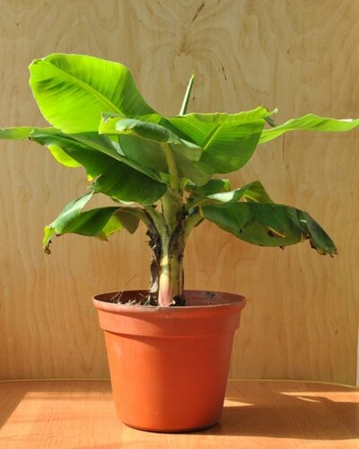
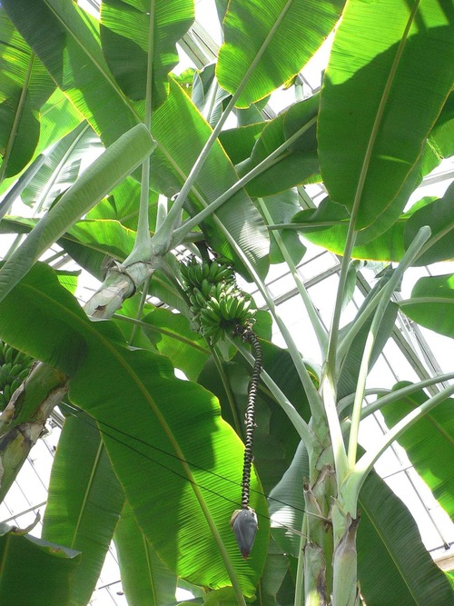
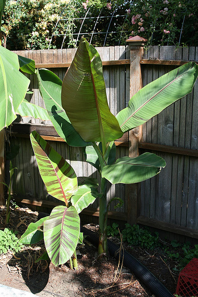
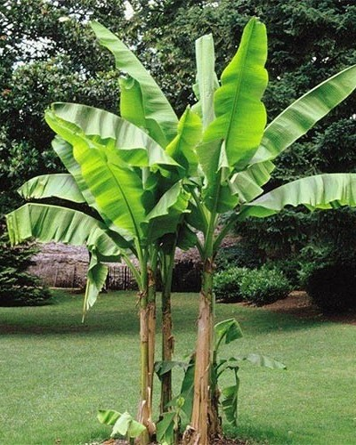

Банани — трав'янисті рослини з могутньою кореневою системою та коротким стеблом. Висота рослин варіює від 2 до 9 м і навіть вище що робить їх одними з найвищих трав у світі і не дивно, що багато хто помилково вважає їх деревами.
Банани родом з островів Малайського архіпелагу, де вони були відомі задовго до нашої ери. Звідти мандрівники завезли ці фрукти в Індію, Китай і Шрі-Ланку. А європейці розвезли їх по всьому світу
Вирощується через красиві листя довжиною до одного метра. Листя банана темно-зелені, нерідко зустрічаються екземпляри з червонуватим відтінком.
Виростає до 5,5 метрів у висоту при діаметрі помилкового стовбура біля основи близько 45 см. Забарвлення цього декоративного банана може мати червоний відтінок. Плоди банана невеликі, до 13 см в довжину.
Холодостійкий вид, що досягає у висоту 2,5 метрів. Забарвлення листя банана змінюється від насиченого темно-зеленого кольору в підставі листа до блідо-зеленого кольору в його вершині.
Плоди розвиваються тільки з жіночих квіток. Розмір, колір і форма плодів можуть значно різнитись залежно від виду або сорту. Довжина плоду варіює від 3 до 40 см, товщина — від 2 до 8 см. Колір шкірки може бути жовтим, зеленим, червоним або навіть сріблястим. М'якуш плода білий, кремовий, жовтий або оранжевий.